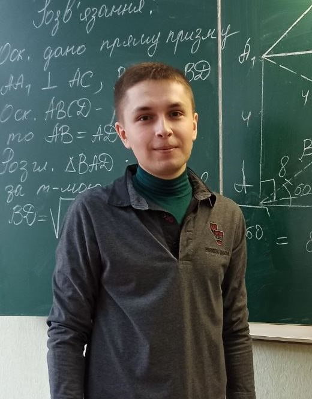

Я, аспірант групи АСД-2020, , послуговуючись на платформі , звітую про виконання таких робіт:
- Завдання першого тижня
- Завдання другого тижня
- Завдання третього тижня
- Завдання четвертого тижня
- Завдання п'ятого тижня
Користувацький маркер
- Завдання шостого тижня
Зображення маркерів для перевірки
- Завдання сьомого тижня
- Лабораторна робота №1 (AR)
- Завдання восьмого тижня
- Завдання дев'ятого тижня
- Завдання деcятого тижня
- Завдання одинадцятого тижня
//- Лабораторна робота №2 (AR)
- Завдання тринадцятого тижня
NFT-маркер
- ...